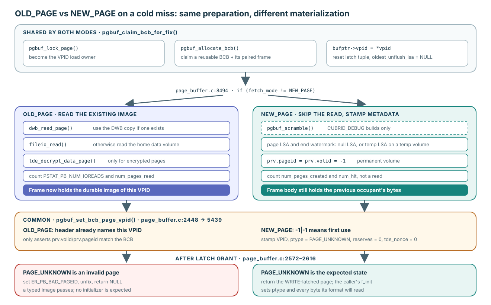
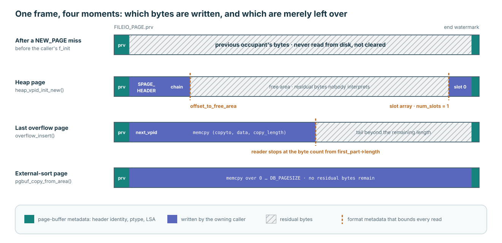
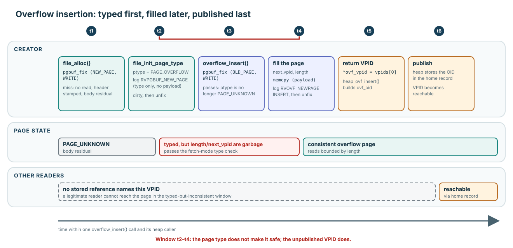

“NEW_PAGE registers the new page in a BCB” is not the difference
A tempting summary is that the file manager creates the page and NEW_PAGE places it in the page buffer. Test that claim against an OLD_PAGE miss. That miss also becomes the VPID load owner, claims a reusable BCB with its paired frame, binds the VPID, grants the latch, and publishes the BCB in the hash chain. Registration is therefore shared work, not a property of NEW_PAGE.
| Step on a cold miss | OLD_PAGE | NEW_PAGE |
|---|---|---|
| Load lock, BCB claim, VPID bind, latch reset | Yes | Yes, identical code |
| Where the frame bytes come from | DWB copy or home data volume, decrypted if needed | Nowhere; the read is skipped |
| Header metadata | Arrives with the image; only checked | LSA initialized, then VPID, PAGE_UNKNOWN, reserves, and TDE nonce stamped |
PAGE_UNKNOWN after the latch | Invalid page: ER_PB_BAD_PAGEID | Expected until the caller sets the type |
| Statistics | A data-page read | A created page counted as a hit |
| Grant, both debt ledgers, hash publication | Yes | Yes, identical code |
NEW_PAGE is the caller's promise that the page's old bytes are worthless. Page buffer uses that promise to skip the read and to accept an untyped page.
The allocation-to-buffer contract, caller obligations, and cross-engine comparison belong to Lecture 5. This page follows the source one level deeper.
The paths split at one condition and rejoin at two checks

Normal mutex path at the pinned revision. Temporary volumes use a temporary LSA and skip the on-page identity comparison.
- Shared preparation.
pgbuf_claim_bcb_for_fix()becomes load owner, callspgbuf_allocate_bcb(), bindsbufptr->vpid, resets the atomic latch tuple, and nullsoldest_unflush_lsa. - The branch.
if (fetch_mode != NEW_PAGE)guards every read.OLD_PAGEtriesdwb_read_page(), thenfileio_read(), then decrypts TDE pages.NEW_PAGErunspgbuf_scramble()inCUBRID_DEBUGbuilds only, initializes both LSA locations, and writes-1intoprv.pageidandprv.volidon a permanent volume. - Header bootstrap.
pgbuf_fix()callspgbuf_set_bcb_page_vpid(). For a header of-1|-1it stamps the BCB VPID and setsptype = PAGE_UNKNOWN,p_reserve_1,p_reserve_2, andtde_nonceto zero. For an image read from storage it only asserts that the header already names the VPID. - Page-type rule. After the latch,
PAGE_UNKNOWNis legal forNEW_PAGE,OLD_PAGE_DEALLOCATED,OLD_PAGE_IF_IN_BUFFER, andRECOVERY_PAGE. ForOLD_PAGEit asserts, setsER_PB_BAD_PAGEID, unfixes, and returnsNULL.
Verified mechanism: shared claim at pinned page_buffer.c:8392–8493; read branch at 8494–8598; NEW_PAGE branch at 8599–8632; header bootstrap at 2448 and 5439–5471; page-type rule at 2572–2616.
Page buffer never clears the body
On a NEW_PAGE miss the BCB is a reused pool slot, and its frame was last filled for some other VPID. Page buffer calls neither memset nor memcpy on that frame in a release build. It writes only the reserved header and the end watermark LSA. Every byte between them is the previous occupant's data.

The widths are schematic. Hatched regions contain whatever bytes the frame held before this VPID was bound.
The one page-buffer function that copies payload into a NEW_PAGE frame is pgbuf_copy_from_area(). It fixes with NEW_PAGE, sets PAGE_AREA, calls memcpy ((char *) pgptr + start_offset, area, length), skips logging, and marks the page dirty. Its only external caller, external sort, copies the whole DB_PAGESIZE area.
Verified mechanism: NEW_PAGE metadata writes at page_buffer.c:8599–8632; scramble at 11293–11307; pgbuf_copy_from_area() at 4833–4912; its caller at external_sort.c:5918. VS-03 records that this helper ignores do_fetch.
Format metadata bounds every read
If the body holds residual bytes, must the caller overwrite the whole page? The common initializers show that it does not. Each page format carries metadata that tells a reader which bytes are meaningful. The caller must establish that metadata; readers that obey it never interpret the rest.
| Owner and initializer | What it writes | What bounds a reader |
|---|---|---|
Heap: heap_vpid_init_new() | PAGE_HEAP, spage_initialize(), one chain record | num_slots, slot offsets, offset_to_free_area |
B-tree: btree_initialize_new_page() | PAGE_BTREE, spage_initialize(), RVBT_GET_NEWPAGE log | The same slotted-page header |
Overflow: file_init_page_type(), then overflow_insert() | PAGE_OVERFLOW first; later next_vpid, length, and the payload | first_part->length and the chain of next_vpid |
Disk: volume header at disk_manager.c:590 | PAGE_VOLHEADER and the DISK_VOLUME_HEADER fields | The header structure itself |
External sort: pgbuf_copy_from_area() | The whole DB_PAGESIZE area | No residual bytes remain |
spage_initialize() writes only SPAGE_HEADER: num_slots = 0, total_free, cont_free, and offset_to_free_area. It never clears the free area. Recovery follows the same rule. pgbuf_log_new_page() logs only the initialized prefix of data_size bytes, and file_init_page_type() logs a type-only RVPGBUF_NEW_PAGE record with no payload.
Verified mechanism: heap_file.c:2830–2860, btree.c:5184–5194, slotted_page.c:1065–1090, file_manager.c:5388–5405, overflow_file.c:149–228, disk_manager.c:590–600, and page_buffer.c:15093–15123. Overflow reads are bounded at overflow_file.c:794–818.
An unpublished VPID has no legitimate reader
Format metadata protects readers only after the metadata is itself valid. Overflow insertion exposes the gap. It performs creation in two separate fixes, and between them the page is typed but inconsistent.

file_alloc_multiple()callsfile_alloc()for each page. Each page is fixed withNEW_PAGE, typedPAGE_OVERFLOWbyfile_init_page_type(), and unfixed.overflow_insert()fixes each page again withOLD_PAGE. The post-latch rule passes because the type is no longerPAGE_UNKNOWN.- It writes
next_vpidandlength, copies the payload withmemcpy, logsRVOVF_NEWPAGE_INSERT, and unfixes. - Only after both phases does it return
*ovf_vpid = vpids[0].heap_ovf_insert()turns that VPID into an OID, and the heap later stores it in a home record.
During the window between steps 1 and 3, a reader that fixed the page would pass the type check and trust a garbage length. Nothing stops such a fix inside page buffer. The window is safe because no stored reference names the VPID yet, so no legitimate reader can arrive.
Verified mechanism: two-phase insertion at overflow_file.c:145–235; per-page allocation at file_manager.c:5649 and 5495–5516; OID construction at heap_file.c:6097–6112.
A reallocated VPID can outlive an old reference
The publication condition assumes that every reference to the VPID is new. A NEW_PAGE hit breaks that assumption. A deallocated page keeps its BCB with ptype = PAGE_UNKNOWN. If allocation hands out the same VPID again, NEW_PAGE reuses that resident BCB. Its header is already stamped, so no miss-only initialization runs. A thread that read the VPID from the old publication, such as a scan that saw a previous next_vpid, may still try to fix it.
Once the new owner's initializer has set a real type, page buffer cannot distinguish that stale fix from a legitimate one. The protection therefore lives in caller protocols, and each path supplies its own:
| Path | Protection seen at the pinned revision | Evidence level |
|---|---|---|
| Heap chain scan | Keeps the previous page fixed until the next page is fixed with OLD_PAGE_PREVENT_DEALLOC. Page buffer registers the avoid-deallocation count before the latch wait, and vacuum rechecks pgbuf_has_prevent_dealloc() before it removes a page. | Verified mechanism for this path |
| Cached or sampled VPIDs | bestspace, btree_load, parallel heap scan, and the histogram sampler use OLD_PAGE_MAYBE_DEALLOCATED and treat ER_PB_BAD_PAGEID as “gone.” This catches a page that is still deallocated, not one already reallocated and typed. | Verified mechanism with a stated limit |
| Direct OID access | heap_prepare_object_page() uses plain OLD_PAGE. Safety appears to rely on permanent-file deallocation being postponed until commit and on vacuum removing references first. | Inference; analysis required |
NEW_PAGE or OLD_PAGE. The complete cross-path argument has not been verified; the uncertainty registry tracks it as VS-22.Verified mechanism: resident NEW_PAGE hit at page_buffer.c:2399–2406; deallocation to PAGE_UNKNOWN at 15182–15221; postponed permanent deallocation at file_manager.c:6149–6156; heap-scan ordering at heap_file.c:7547–7576; avoid-deallocation registration at page_buffer.c:2474–2477; vacuum rechecks at heap_file.c:3382–3389 and vacuum.c:1850; bestspace.cpp:681–693; heap_file.c:25571.
A definition that survives the counterexamples
OLD_PAGE | NEW_PAGE | |
|---|---|---|
| Caller claims | The page is already published and its stored bytes mean something. | Allocation just produced this VPID, and its old bytes mean nothing. |
| Miss materialization | Read DWB or volume; decrypt. | No read; stamp header metadata; the body keeps residual bytes. |
PAGE_UNKNOWN | A published page has vanished: error. | The expected state before initialization. |
| Caller obligation afterward | Obey the page's existing format. | Establish type and format metadata, log, and dirty the page before its VPID is published. |
| Shared with the other mode | Load lock, BCB claim, identity convergence, latch grant, fix debt, and hash publication. | |
A later fix of a page that has been created and typed but not yet filled can legally use OLD_PAGE, as overflow insertion shows. The fetch mode describes what the caller knows about the stored bytes, not how recently the page was allocated.
Test the definition on a new change
Scenario
A proposed change adds a page format whose initializer writes only a 16-byte header containing a record count. A reader loops over count fixed-size records. Another proposal asks page buffer to memset every NEW_PAGE frame “for safety.”
Consider: what must the first design guarantee, when may the VPID be stored in another page, and what does the memset proposal cost or fail to fix?
Open the explanation
The initializer must set a real page type and count = 0 before any reader can reach the page. The reader must never read past count. The VPID may be stored elsewhere only once the header is consistent, or while the creator still holds the WRITE latch under which it finishes the header, because a reader that follows the reference must wait for that latch. Zeroing every frame adds a full-page write to every allocation. It replaces residual bytes with zeros but cannot make count correct, and it does nothing for a stale VPID that reaches the page after reallocation. That hazard belongs to the caller protocol, not to the byte contents.
Trace it in this order
page_buffer.c:8392–8632: shared claim, then the read branch and theNEW_PAGEbranch side by side.page_buffer.c:2440–2448and5439–5471: the common header bootstrap.page_buffer.c:2572–2616: the page-type rule for each fetch mode.file_manager.c:5495–5516andheap_file.c:2830–2860: an owner initializer.overflow_file.c:145–235andheap_file.c:6097–6112: typed first, filled later, published last.
← Return to Lecture 3 fetch modes